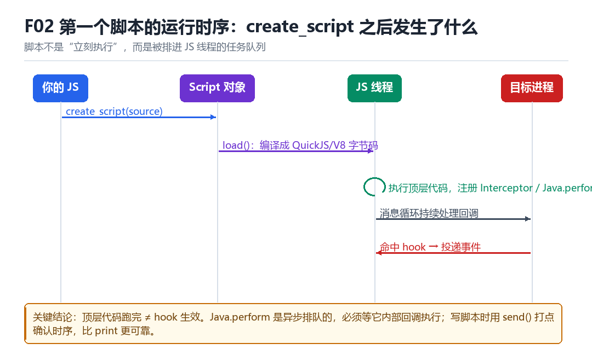

F02
Frida 第一个脚本运行时机
create_script、load_script、GumJS、QuickJS/V8、JS 调度线程
脚本不是“加载完就执行”，而是被排进一个线程的任务队列。
2.1 五个动作

create_script(source)：把源码交给 Script 对象，此时还没有执行。load()：编译成 QuickJS 或 V8 的字节码。- JS 线程执行顶层代码：你的
Interceptor.attach、Java.perform在这一步注册。 - 消息循环开始：之后所有回调都由这个循环驱动。
- 命中 hook → 事件被投递回 JS 线程 → 你的回调执行。
2.2 一个必须记住的结论
顶层代码跑完 ≠ hook 生效。
特别是 Java.perform：它是异步排队的，要等 ART 就绪、ClassLoader 可用才执行内部回调。所以你在 perform 外面写的 console.log，可能比里面的代码先打印。
2.3 用 send 打点确认时序
最小可验证的时序探针
send({t: 'top', ts: Date.now()});
Java.perform(() => {
send({t: 'perform', ts: Date.now()});
setTimeout(() => send({t: 'tick', ts: Date.now()}), 0);
});2.4 本章自测
- create_script 与 load 的区别是什么？
- 为什么 Java.perform 里的代码可能晚于外面的代码执行？
- JS 调度线程与目标线程是什么关系？
- 设计一个能证明“hook 真的生效”的最小实验。
2.5 深入：QuickJS 与 V8 的差别
| 维度 | QuickJS | V8 |
|---|---|---|
| 启动开销 | 小 | 大 |
| 执行性能 | 中 | 高 |
| 内存占用 | 小 | 大 |
| 默认 | 是 | 需显式指定 |
对 hook 脚本来说，90% 的时间花在“等目标”而不是“跑 JS”，所以 QuickJS 的小体积与快启动更有价值。只有在脚本里有大量计算（比如解密算法）时，V8 才有优势。
2.6 实战：为什么 setImmediate 有时不执行
因为 JS 线程可能被阻塞在一个同步的 hook 回调里。JS 运行时有“消息循环”，所有回调都在这个循环里串行执行；一个长时间的回调会挡住其他所有回调。
2.7 原理推演：为什么需要“独立的 JS 线程”
因为 hook 回调是在目标线程上执行的，而 JS 代码可能很慢。如果 JS 直接在目标线程上跑，就会阻塞业务逻辑。所以 Frida 把 JS 放到独立线程，回调只是“投递一条消息”。
| 执行位置 | 优点 | 缺点 |
|---|---|---|
| 目标线程直接执行 JS | 简单 | 阻塞业务、易被检测 |
| 独立 JS 线程 | 不阻塞 | 要多一次消息传递 |
副作用：JS 线程是“多出来的一条线程”，会成为检测线索（见 F08 与 F11）。
2.8 数据细节：一次回调的延迟
| 环节 | 量级 | 说明 |
|---|---|---|
| 目标线程 → 消息队列 | 微秒 | 无锁队列 |
| JS 线程被唤醒 | 微秒~毫秒 | 取决于调度 |
| JS 执行 | 视代码 | 可能很久 |
| 返回结果 | 微秒 | 若需要同步返回 |
这就是为什么“hook 里做重活”会让目标变慢：不是 hook 本身慢，而是目标线程在等 JS 线程的结果。
2.9 深入：脚本加载失败的四种表现
| 表现 | 原因 | 定位 |
|---|---|---|
| host 完全无输出 | 脚本没加载 / 语法错误 | 看 host 的 error |
| 有 alive 无回调 | hook 没挂上 | 检查目标是否被调用 |
| 回调触发但值不对 | hook 了错的重载 | 打印方法签名 |
| 脚本跑一会就停 | 异常没捕获 | 加 try/catch |
这四类表现对应完全不同的排查方向。先分类，再动手——不然容易在错误的方向上花几个小时。
2.10 深入：为什么“重载”是高频坑
Java 支持方法重载，sign(String) 与 sign(String, int) 是两个不同的 ArtMethod。Java.use().sign.implementation 会一次性替换所有重载，但你的回调可能只处理了一种参数形态。
按签名精确 hook
const C = Java.use('com.x.Sign');
C.sign.overload('java.lang.String').implementation = function (a) { ... };
C.sign.overload('java.lang.String', 'int').implementation = function (a, b) { ... };